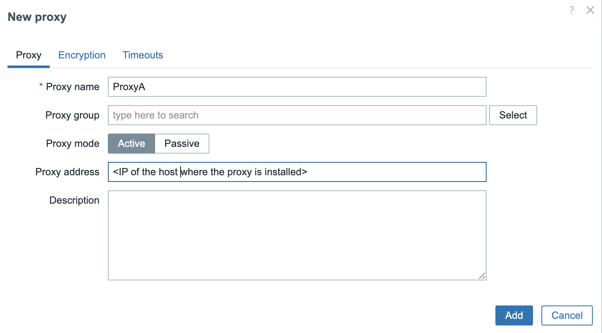

Running Proxies as containers
As discussed in the previous section, Zabbix proxies offer a lightweight and efficient solution for distributed monitoring. Leveraging SQLite as their backend database, they are inherently flexible and portable, making them well-suited for deployment in containerized environments. This chapter provides a step-by-step guide on deploying a Zabbix proxy within a container, outlining configuration options and best practices for optimal performance and maintainability.
Setting up containers
We will begin by demonstrating how to set up containerized environments on Red Hat-based systems using Podman. Podman is the recommended container engine on Red Hat distributions and offers several advantages over Docker.
Firstly, Podman enhances security by supporting rootless containers, allowing containers to run under non-privileged user accounts. Secondly, it integrates seamlessly with SELinux, enabling robust access control and policy enforcement. Thirdly, Podman works natively with systemd, which facilitates container lifecycle management through systemd units and quadlets.
For this setup, you will need a virtual machine (VM) where we will install Podman and deploy the Zabbix proxy container. This container will then be configured to communicate with your Zabbix server.
Add the proxy to the zabbix frontend

3.9 Add proxy to frontend
To keep the configuration straightforward, we will deploy an active Zabbix proxy. In this case, only two parameters need to be configured: the proxy's hostname (as defined in the Zabbix frontend) and the proxy’s IP address for communication with the Zabbix server.
Create the podman setup
Next, we begin configuring Podman on the host system where the Zabbix proxy container will be installed and managed.
Install podman and needed tools
Still as user podman create the following folders
Run on both RedHat and Ubuntu
Once done become to user root and execute the following commands.
Only if your system uses SELinux
This command adds a SELinux file context mapping by creating an equivalence (-e) between the default container storage directory /var/lib/containers and the user’s Podman container storage path /home/podman/.local/share/containers. Essentially, it tells SELinux to treat files in the user's container storage the same way it treats files in the default system container storage, ensuring proper access permissions under SELinux policy.
After defining new SELinux contexts, this command recursively (-R) applies the correct SELinux security contexts to the files in the specified directory. The -v flag enables verbose output, showing what changes are made. This ensures that all files in the container storage directory have the correct SELinux labels as defined by the previous semanage commands.
This command enables “linger” for the user podman. Linger allows user services (such as containers managed by systemd) to continue running even when the user is not actively logged in. This is useful for running Podman containers in the background and ensures that containerized proxies or other services remain active after logout or system reboots.
On both RedHat and Ubuntu
This line ensures that the XDG_RUNTIME_DIR environment variable is correctly set for the podman user. This variable points to the location where user-specific runtime files are stored, including the systemd user session bus. Setting it is essential for enabling systemctl --user to function properly with Podman-managed containers.
Prepare the Proxy config
The next step is to create a .container unit file for our Quadlet setup. This
file should be placed in the directory ~/.config/containers/systemd/. For example,
we will create a file named zabbix-proxy-sqlite.container, which will define the
configuration for running the Zabbix proxy container under systemd using Podman.
On both RedHat and Ubuntu
The container image for the Zabbix proxy using SQLite can be sourced from Docker Hub. Specifically, we will use the image tagged 7.0-centos-latest, which is maintained by the official Zabbix project. This image can be found at:
https://hub.docker.com/r/zabbix/zabbix-proxy-sqlite3/tags?name=centos
A complete list of available image tags, including different versions and operating system bases, is available on the image’s main page:
https://hub.docker.com/r/zabbix/zabbix-proxy-sqlite3
For our purposes, the 7.0-centos-latest tag provides a CentOS-based container image that is well-suited for LTS environments, and it includes all necessary components to run the Zabbix proxy with SQLite.
In addition to the .container unit file, we also need to create an environment
file that defines the configuration variables for the container. This file must
reside in the same directory as the .container file ~/.config/containers/systemd/
and should be named ZabbixProxy.env, as referenced in our .container configuration.
This environment file allows us to override default container settings by specifying environment variables used during container runtime. The list of supported variables and their functions is clearly documented on the container's Docker Hub page:
https://hub.docker.com/r/zabbix/zabbix-proxy-sqlite3
These variables allow you to configure key parameters such as the proxy mode, server address, hostname, database settings, and logging options, providing a flexible and declarative way to tailor the proxy’s behavior to your environment.
Let's create the file ~/.config/containers/systemd/ZabbixProxy.env and add
the following content.
On both RedHat and Ubuntu
With our configuration complete, the final step is to reload the systemd user daemon so it recognizes the new Quadlet unit. This can be done using the following command:
If everything is set up correctly, systemd will automatically generate a service
unit for the container based on the .container file. You can verify that the
unit has been registered by running:
You should see output similar to:
To start the container, use the following command (replacing the service name if you used a different one):
To verify that the container started correctly, you can inspect the running containers with:
This will return output like the example below:
On both RedHat and Ubuntu
Take note of the CONTAINER ID—in this example, it is b5716f8f379d. You can
then retrieve the container's logs using:
This command will return the startup and runtime logs for the container, which are helpful for troubleshooting and verifying that the Zabbix proxy has started correctly.
Upgrading our containers
At some point, you may be asking yourself: How do I upgrade my Zabbix containers? Fortunately, container upgrades are a straightforward process that can be handled either manually or through automation, depending on your deployment strategy.
Throughout this book, we've been using the image tag 7.0-centos-latest, which always
pulls the most up-to-date CentOS-based Zabbix 7.0 image available at the time.
This approach ensures you are running the latest fixes and improvements without
specifying an exact version.
Alternatively, you can opt for version specific tags such as centos-7.0.13, which
allow you to maintain strict control over the version deployed. This can be helpful
in environments where consistency and reproducibility are critical.
In the following sections, we will explore both approaches: using the latest
tag for automated updates and specifying fixed versions for controlled environments.
Upgrading manually
If you're running your Zabbix container using a floating tag such as :latest or :trunk-centos, upgrading is a simple and efficient process. These tags always point to the most recent image available in the repository.
To upgrade:
Pull the latest image using Podman.
Restart the systemd service associated with the container.Thanks to our Quadlet integration, systemd will handle the rest automatically: The currently running container will be stopped. A new container instance will be started using the freshly pulled image. All configuration options defined in the associated .container file will be reapplied. This approach allows for quick updates with minimal effort, while still preserving consistent configuration management through systemd.
Upgrading When Using a Fixed Image Tag
If your container is configured to use a fixed image tag (e.g., 7.0.13-centos)
rather than a floating tag like :latest or :trunk, the upgrade process involves
one additional step: manually updating the tag in your .container file.
For example, if you're running a user-level Quadlet container and your configuration file is located at:
You'll need to edit this file and update the Image= line. For instance, change:
to:
Once the file has been updated, apply the changes by running:
This tells systemd to reload the modified unit file and restart the container with the updated image. Since you're using a fixed tag, this upgrade process gives you full control over when and how new versions are introduced.
Upgrading automatically
When using floating tags like :latest or :trunk-centos for your Zabbix container
images, Podman Quadlet supports automated upgrades by combining them with the
AutoUpdate=registry directive in your .container file.
This setup ensures your container is automatically refreshed whenever a new image is available in the remote registry without requiring manual intervention.
Example Configuration
In this example, the Image points to the trunk-centos tag, and AutoUpdate=registry
tells Podman to periodically check the container registry for updates to this tag.
How the Auto-Update Process Works
Once configured, the following steps are handled automatically:
-
Image Check The systemd service
podman-auto-updateis triggered by a timer (usually daily). It compares the current image digest with the remote image's digest for the same tag. -
Image Update If a new version is detected:
-
The updated image is pulled from the registry.
- The currently running container is stopped and removed.
-
A new container is created from the updated image.
-
Configuration Reuse The new container is launched using the exact same configuration defined in your
.containerfile, including environment variables, volume mounts, ports, and networking.
This approach provides a clean, repeatable way to keep your Zabbix proxy (or other components) current without direct user intervention.
Enabling the Auto-Update Timer
To ensure that updates are applied regularly, you must enable the Podman auto-update timer.
For System-Wide Services
For User-Level Services
This activates a systemd timer that periodically invokes podman-auto-update.service.
When to Use This Approach
AutoUpdate=registry is particularly useful in the following scenarios:
- Development or staging environments, where running the latest version is beneficial.
- Non-critical Zabbix components, such as test proxies or lab deployments.
- When you prefer a hands-off update strategy, and image stability is trusted.
Note
This setup is not recommended for production environments without a proper rollback
plan. Floating tags like :latest or :trunk-centos can introduce breaking
changes unexpectedly. For production use, fixed version tags (e.g. 7.0.13-centos)
offer greater stability and control.
Conclusion
In this chapter, we deployed a Zabbix active proxy using Podman and systemd Quadlets
on a Red Hat-based system. We configured SELinux, enabled user lingering, and created
both .container and .env files to define proxy behavior. Using Podman in rootless
mode ensures improved security and system integration. Systemd management makes
the container easy to control and monitor. This setup offers a lightweight, flexible,
and secure approach to deploying Zabbix proxies. It is ideal for modern environments,
especially when using containers or virtualisation. With the proxy running, you're
ready to extend Zabbix monitoring to remote locations efficiently.
Questions
- What are the main advantages of using Podman over Docker for running containers on Red Hat-based systems?
- Why is the loginctl enable-linger command important when using systemd with rootless Podman containers?
- What is the purpose of the .env file in the context of a Quadlet-managed container?
- How do SELinux policies affect Podman container execution, and how can you configure them correctly?
- How can you verify that your Zabbix proxy container started successfully?
- What is the difference between an active and passive Zabbix proxy?